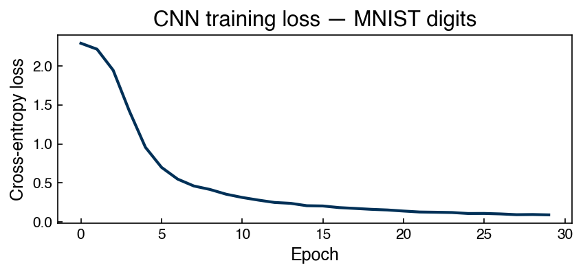
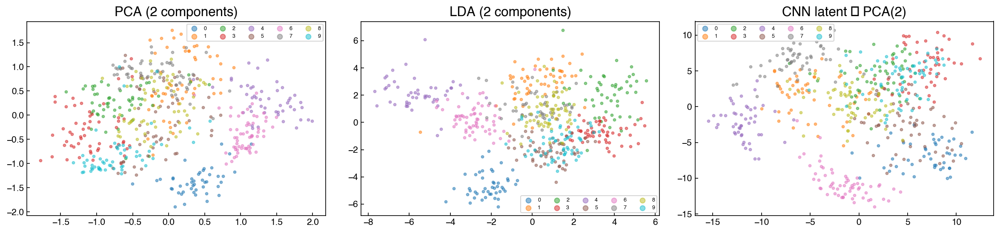
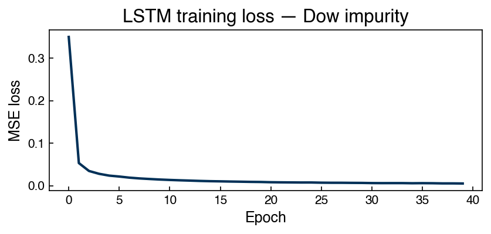
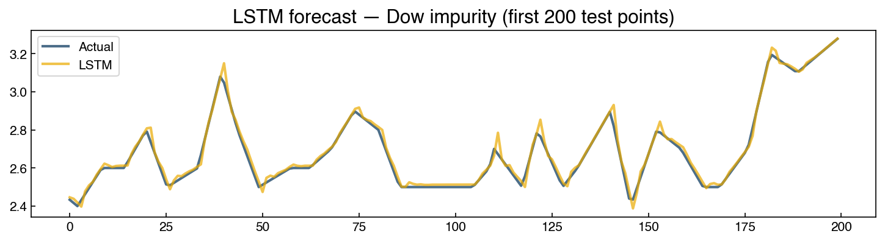
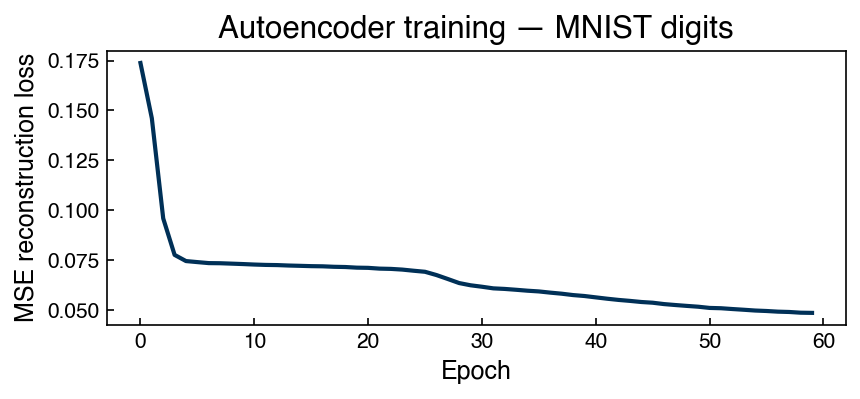
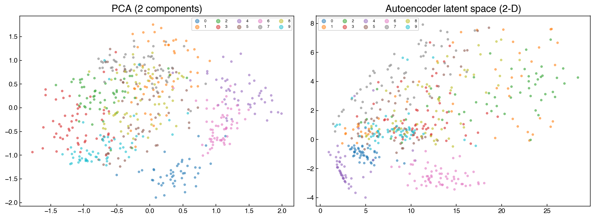
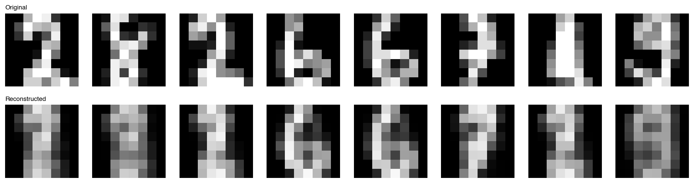

Neural Network Architectures#
Learning Objectives
By the end of this chapter, you will be able to:
Explain how convolutional, recurrent, and autoencoder architectures impose domain-appropriate structure on the learned feature representations.
Implement a minimal CNN in PyTorch and compare its learned projections to PCA and LDA on the MNIST digits dataset.
Implement an LSTM in PyTorch for time series forecasting and compare its performance to the ARIMA model from Topic 6.2.
Implement a convolutional autoencoder in PyTorch, visualize the latent space, and relate it to PCA and generative models from Topic 5.4.
Select an appropriate architecture for a given data modality using a practical decision table.
Note
This chapter uses PyTorch for all neural network implementations. If PyTorch is not installed in your environment, run:
conda install pytorch torchvision -c pytorch
or pip install torch torchvision. All other packages used are standard.
%matplotlib inline
import numpy as np
import pandas as pd
import matplotlib.pyplot as plt
import torch
import torch.nn as nn
from torch.utils.data import DataLoader, TensorDataset
plt.style.use('../settings/plot_style.mplstyle')
clrs = np.array(['#003057', '#EAAA00', '#4B8B9B', '#B3A369', '#377117',
'#1879DB', '#8E8B76', '#F5D580', '#002233'])
# Reproducibility
torch.manual_seed(0)
np.random.seed(0)
The Unifying View: Architecture as Structured Feature Engineering#
Every neural network architecture is, at its core, an answer to the question: what structure in the data should the feature extractor exploit?
Fully-connected MLP (Topic 6.3): no structure assumed — every input can interact with every other. Best for tabular data where features have no spatial or temporal ordering.
Convolutional Neural Networks (CNNs): input has spatial structure (images, spectra, grids). The same filter can be useful anywhere in the image — enforcing translation equivariance and dramatically reducing parameters.
Recurrent Networks / LSTMs: input is a sequence with temporal dependencies. The same computation is applied at each time step with a shared hidden state that carries information forward.
Autoencoders: learn a compressed representation (latent code) by training the network to reconstruct its own input. No labels required — the task is self-supervised.
The module title “Advanced Topics” reflects a broader truth: architectures are the feature engineering decisions of deep learning. A well-chosen architecture encodes domain knowledge that would otherwise need to be hand-crafted.
Exercise 132
Use the unifying view to reason about architecture choice.
For each scenario below, identify the most appropriate architecture from the table above and give a one-sentence justification:
Predicting the next hour’s reactor temperature from the past 48 hourly readings.
Classifying whether a microscopy image of a catalyst particle contains cracks.
Predicting product yield from a 15-column tabular dataset of operating conditions.
Detecting anomalous sensor readings in an unlabeled process dataset.
Convolutional Neural Networks#
The Core Idea: Learned Spatial Filters#
An image is a 2-D array of pixels. The pixels in a small neighborhood (e.g., 3×3) are strongly correlated — an edge detector that works at one location should work at another. CNNs exploit this by applying a shared filter (a small matrix of learnable weights) at every location:
A filter that detects a horizontal edge will fire wherever it sees the right intensity gradient, regardless of where in the image it appears. Stacking multiple filter channels in each layer builds up a hierarchy: first layer detects edges, second detects corners, third detects textures, and so on.
Pooling (typically max-pooling over 2×2 windows) reduces the spatial resolution after convolution, providing translation invariance (small shifts in the input do not change the output much) and reducing the number of parameters.
A Minimal CNN on MNIST Digits#
This is our first PyTorch model, so the example doubles as a tour of the workflow
that every PyTorch project follows: prepare tensors → define a model class → write
the training loop → evaluate. Where scikit-learn’s fit() hid this machinery
(Topic 6.3), PyTorch asks you to write it out — the price of the flexibility that
custom architectures require.
Step one is data preparation. The key move is undoing the flattening that every
previous chapter applied to these images: a convolutional layer needs to know which
pixels are neighbors, so the 64-value rows become 8×8 images again, with an explicit
channel dimension (PyTorch’s convention is (N, channels, height, width); grayscale
means one channel). The DataLoader handles the mini-batching from Topic 6.3 —
shuffled batches of 32, one full pass through them per epoch:
from sklearn.datasets import load_digits
from sklearn.model_selection import train_test_split
from sklearn.preprocessing import LabelEncoder
digits = load_digits()
X_dig = digits.data.astype(np.float32) # (1797, 64)
y_dig = digits.target.astype(np.int64)
# Normalize to [0, 1]
X_dig /= 16.0
# Reshape to (N, 1, 8, 8) — channels_first format for PyTorch Conv2d
X_dig_img = X_dig.reshape(-1, 1, 8, 8)
X_tr, X_te, y_tr, y_te = train_test_split(X_dig_img, y_dig, test_size=0.3, random_state=0)
# Convert to PyTorch tensors
X_tr_t = torch.from_numpy(X_tr)
y_tr_t = torch.from_numpy(y_tr)
X_te_t = torch.from_numpy(X_te)
y_te_t = torch.from_numpy(y_te)
train_ds = TensorDataset(X_tr_t, y_tr_t)
train_loader = DataLoader(train_ds, batch_size=32, shuffle=True)
Next, the model and its training loop. Read the model class in two halves. The
features half is the convolutional part: two rounds of convolve → ReLU → pool,
with the comments tracking how each image shrinks spatially (8×8 → 4×4 → 2×2) while
growing in channels (1 → 8 → 16), so spatial detail is traded for feature richness. The classifier half
is then exactly Topic 6.3’s MLP, applied to the flattened 16×2×2 = 64-value feature
map: a CNN is learned feature engineering with an MLP on top. The training loop
is what MLPRegressor.fit() did for us internally, now written out: for every
mini-batch, zero the stored gradients, compute the loss, call loss.backward()
(automatic differentiation — backpropagation), and let the optimizer take one step.
One pass through all batches is one epoch, the unit on the loss curve’s x-axis:
class SmallCNN(nn.Module):
def __init__(self):
super().__init__()
self.features = nn.Sequential(
nn.Conv2d(1, 8, kernel_size=3, padding=1), # (N, 8, 8, 8)
nn.ReLU(),
nn.MaxPool2d(2), # (N, 8, 4, 4)
nn.Conv2d(8, 16, kernel_size=3, padding=1), # (N, 16, 4, 4)
nn.ReLU(),
nn.MaxPool2d(2), # (N, 16, 2, 2)
)
self.classifier = nn.Sequential(
nn.Flatten(), # (N, 64)
nn.Linear(64, 32),
nn.ReLU(),
nn.Linear(32, 10),
)
def forward(self, x):
return self.classifier(self.features(x))
def encode(self, x):
"""Return the penultimate (32-D) representation."""
feats = self.features(x)
flat = feats.flatten(1)
return torch.relu(self.classifier[1](flat))
cnn = SmallCNN()
optimizer = torch.optim.Adam(cnn.parameters(), lr=1e-3)
criterion = nn.CrossEntropyLoss()
# Training loop
losses = []
for epoch in range(30):
epoch_loss = 0.0
for xb, yb in train_loader:
optimizer.zero_grad()
loss = criterion(cnn(xb), yb)
loss.backward()
optimizer.step()
epoch_loss += loss.item()
losses.append(epoch_loss / len(train_loader))
fig, ax = plt.subplots(figsize=(6, 3))
ax.plot(losses)
ax.set_xlabel('Epoch')
ax.set_ylabel('Cross-entropy loss')
ax.set_title('CNN training loss — MNIST digits')
plt.tight_layout()

Evaluation uses two standard PyTorch idioms: .eval() switches off training-only
behavior, and torch.no_grad() turns off gradient tracking (faster, less memory,
and a signal to the reader that no learning happens here). The network outputs ten
scores per image; argmax picks the highest-scoring class:
cnn.eval()
with torch.no_grad():
y_pred = cnn(X_te_t).argmax(dim=1).numpy()
accuracy = (y_pred == y_te).mean()
print(f'CNN test accuracy: {accuracy:.3f}')
CNN test accuracy: 0.957
Comparing CNN, PCA, and LDA Projections#
The intermediate representation of the CNN encodes class information. We can compare it to unsupervised (PCA) and supervised (LDA) projections:
from sklearn.decomposition import PCA
from sklearn.discriminant_analysis import LinearDiscriminantAnalysis
# CNN latent features (32-D, penultimate layer)
cnn.eval()
with torch.no_grad():
cnn_feats = cnn.encode(X_te_t).numpy()
# PCA projection
pca = PCA(n_components=2).fit(X_tr.reshape(len(X_tr), -1))
X_te_pca = pca.transform(X_te.reshape(len(X_te), -1))
# LDA projection
lda = LinearDiscriminantAnalysis(n_components=2)
lda.fit(X_tr.reshape(len(X_tr), -1), y_tr)
X_te_lda = lda.transform(X_te.reshape(len(X_te), -1))
# CNN: project to 2D with PCA for visualization
pca2 = PCA(n_components=2).fit(cnn_feats)
X_te_cnn2d = pca2.transform(cnn_feats)
tab10 = plt.cm.tab10(np.linspace(0, 1, 10))
fig, axes = plt.subplots(1, 3, figsize=(16, 4))
for method, X_2d, title in zip(
[0, 1, 2],
[X_te_pca, X_te_lda, X_te_cnn2d],
['PCA (2 components)', 'LDA (2 components)', 'CNN latent → PCA(2)'],
):
for label in range(10):
mask = y_te == label
axes[method].scatter(X_2d[mask, 0], X_2d[mask, 1],
color=tab10[label], alpha=0.5, s=8, label=str(label))
axes[method].set_title(title)
axes[method].legend(ncol=5, fontsize=6, markerscale=2)
plt.tight_layout()
/var/folders/d5/ylnycwpn6szdb0t1n25l0d_40000gn/T/ipykernel_5859/2142271274.py:37: UserWarning: Glyph 8594 (\N{RIGHTWARDS ARROW}) missing from font(s) Helvetica.
plt.tight_layout()
/opt/homebrew/Caskroom/miniforge/base/envs/DA4CHE/lib/python3.10/site-packages/IPython/core/events.py:82: UserWarning: Glyph 8594 (\N{RIGHTWARDS ARROW}) missing from font(s) Helvetica.
func(*args, **kwargs)
/opt/homebrew/Caskroom/miniforge/base/envs/DA4CHE/lib/python3.10/site-packages/IPython/core/pylabtools.py:170: UserWarning: Glyph 8594 (\N{RIGHTWARDS ARROW}) missing from font(s) Helvetica.
fig.canvas.print_figure(bytes_io, **kw)

LDA and CNN projections typically show better cluster separation than PCA because both use label information — LDA explicitly, CNN implicitly through the classification loss.
Note
From grids to graphs: convolutions on molecules. Nothing about the shared-filter idea actually requires a grid — only a notion of “neighborhood.” Recall from Complex Structured Data that a molecule is naturally a graph: atoms as nodes, bonds as edges. Graph convolutional networks (more generally, message-passing networks) apply exactly the CNN trick to that setting: each atom updates its feature vector from its bonded neighbors using the same learned weights everywhere in the molecule, just as an image filter is reused at every pixel. Stacking layers lets information propagate across the molecular graph the way edges become corners become textures in a CNN.
This architecture family now dominates machine-learned interatomic potentials (MLIPs) — models trained to reproduce quantum-mechanical energies and forces at a tiny fraction of the cost, which are transforming computational chemistry and materials science. State-of-the-art examples include MACE (Batatia et al., 2022), a higher-order message-passing model, and Meta’s UMA family (Wood et al., 2025), universal models trained across molecules, materials, and catalysts. You can try these models without installing anything at the UMA playground, which runs structure relaxations and simple simulations right in the browser — a molecular graph network you can poke at interactively.
Exercise 133
Inspect the learned filters of the trained CNN.
Extract the first convolutional layer weights from
cnn.features[0].weight.data(shape:[8, 1, 3, 3]). Plot all 8 filters as 3×3 grayscale images in a single figure.For each filter, apply it manually to one test image using
torch.nn.functional.conv2dand visualize the output feature map.Do any filters visually resemble edge detectors (horizontal, vertical, or diagonal edges)? Describe what you observe.
Recurrent Networks and LSTMs#
The Vanishing Gradient Problem#
For sequence data, a natural idea is to process one element at a time with a shared network, carrying a hidden state \(\mathbf{h}_t\) forward:
A simple Recurrent Neural Network (RNN) can learn short-range dependencies, but suffers from the vanishing gradient problem: during backpropagation, gradients are multiplied by \(W_h\) at every step. If the largest eigenvalue of \(W_h\) is \(< 1\), gradients shrink exponentially with sequence length, making it impossible to learn long-range dependencies.
LSTM: Gated Memory#
The Long Short-Term Memory (LSTM) cell addresses this with a cell state \(c_t\) that can carry information over many steps without multiplicative decay, controlled by three gates:
Gate |
Symbol |
Purpose |
|---|---|---|
Forget gate |
\(f_t = \sigma(W_f[\mathbf{h}_{t-1}, \mathbf{x}_t] + \mathbf{b}_f)\) |
What to erase from cell state |
Input gate |
\(i_t = \sigma(W_i[\mathbf{h}_{t-1}, \mathbf{x}_t] + \mathbf{b}_i)\) |
What new information to write |
Output gate |
\(o_t = \sigma(W_o[\mathbf{h}_{t-1}, \mathbf{x}_t] + \mathbf{b}_o)\) |
What to read from cell state |
The cell state update is:
Because the cell state is updated by addition (not multiplication), gradients can flow through many steps without vanishing.
LSTM Forecasting: Dow Impurity#
We apply an LSTM to the same Dow impurity data used in Topics 6.1–6.2. As in ARIMA, we use a chronological train/test split:
# Load Dow impurity time series
df_dow = pd.read_excel('data/impurity_dataset-training.xlsx')
dow_df = df_dow[['Date', 'y:Impurity']].copy()
dow_df['Date'] = pd.to_datetime(dow_df['Date'])
dow_df = dow_df.set_index('Date').dropna()
impurity = dow_df['y:Impurity'].values.astype(np.float32)
print(f'Dow series length: {len(impurity)}')
Dow series length: 10703
def make_windows(series, window_size):
"""Create overlapping input windows and targets for sequence modeling."""
X, y = [], []
for i in range(len(series) - window_size):
X.append(series[i : i + window_size])
y.append(series[i + window_size])
return np.array(X), np.array(y)
# Normalize
mu, sigma_s = impurity.mean(), impurity.std()
impurity_norm = (impurity - mu) / sigma_s
window = 24 # 24 hourly observations as context
X_seq, y_seq = make_windows(impurity_norm, window)
# Chronological split
split = int(0.8 * len(X_seq))
X_tr_seq, X_te_seq = X_seq[:split], X_seq[split:]
y_tr_seq, y_te_seq = y_seq[:split], y_seq[split:]
# Reshape to (N, seq_len, features=1) for PyTorch LSTM
X_tr_t = torch.tensor(X_tr_seq).unsqueeze(-1)
y_tr_t = torch.tensor(y_tr_seq).unsqueeze(-1)
X_te_t = torch.tensor(X_te_seq).unsqueeze(-1)
y_te_t = torch.tensor(y_te_seq).unsqueeze(-1)
lstm_train_ds = TensorDataset(X_tr_t, y_tr_t)
lstm_loader = DataLoader(lstm_train_ds, batch_size=64, shuffle=True)
make_windows should look familiar: it is the lag-feature construction from Topic
6.2’s AR models — each training example is 24 consecutive hourly values, and the
target is the value that came next (an AR(24), in that chapter’s language). The
difference is what happens downstream: the AR model flattened the window into 24
independent regression features, while the LSTM will consume it as a sequence, in
order. Two practical details: the series is standardized before windowing (gradient
training needs scaled inputs, as in Topic 6.3 — strictly, μ and σ should come from
the training portion only, per Module 2’s leakage discipline; with a series this
long the difference is negligible, but fit-on-train is the habit to keep), and
unsqueeze(-1) adds a feature dimension because PyTorch’s LSTM expects
(batch, sequence_length, features) — here one feature, the impurity itself, per
time step.
The model is three lines of substance: nn.LSTM runs the gated cell over the window
one step at a time, carrying the hidden and cell states through the gates described
above; out[:, -1, :] takes the hidden state after the last step — the network’s
32-number summary of everything it saw in the window — and a linear layer maps that
summary to the forecast. The training loop is the same pattern as the CNN’s; only
the model and the loss changed (MSE, the regression loss with the Gaussian-noise
interpretation from Topic 6.3):
class LSTMForecaster(nn.Module):
def __init__(self, input_size=1, hidden_size=32, num_layers=1):
super().__init__()
self.lstm = nn.LSTM(input_size, hidden_size, num_layers, batch_first=True)
self.linear = nn.Linear(hidden_size, 1)
def forward(self, x):
out, _ = self.lstm(x)
return self.linear(out[:, -1, :]) # use last hidden state
lstm_model = LSTMForecaster(hidden_size=32)
optimizer = torch.optim.Adam(lstm_model.parameters(), lr=1e-3)
criterion = nn.MSELoss()
lstm_losses = []
for epoch in range(40):
epoch_loss = 0.0
for xb, yb in lstm_loader:
optimizer.zero_grad()
loss = criterion(lstm_model(xb), yb)
loss.backward()
optimizer.step()
epoch_loss += loss.item()
lstm_losses.append(epoch_loss / len(lstm_loader))
fig, ax = plt.subplots(figsize=(6, 3))
ax.plot(lstm_losses)
ax.set_xlabel('Epoch')
ax.set_ylabel('MSE loss')
ax.set_title('LSTM training loss — Dow impurity')
plt.tight_layout()

Evaluation mirrors the CNN’s (eval() + no_grad()), with one extra step: the
model predicts in standardized units, so its outputs are mapped back to impurity
units with the saved μ and σ before computing errors:
lstm_model.eval()
with torch.no_grad():
y_pred_norm = lstm_model(X_te_t).squeeze().numpy()
# Denormalize
y_pred = y_pred_norm * sigma_s + mu
y_true = y_te_seq * sigma_s + mu
mae_lstm = np.mean(np.abs(y_pred - y_true))
ss_res = np.sum((y_pred - y_true)**2)
ss_tot = np.sum((y_true - y_true.mean())**2)
r2_lstm = 1 - ss_res / ss_tot
print(f'LSTM test MAE: {mae_lstm:.4f}')
print(f'LSTM test r²: {r2_lstm:.3f}')
fig, ax = plt.subplots(figsize=(10, 3))
ax.plot(y_true[:200], label='Actual', alpha=0.7)
ax.plot(y_pred[:200], label='LSTM', alpha=0.7)
ax.set_title('LSTM forecast — Dow impurity (first 200 test points)')
ax.legend()
plt.tight_layout()
LSTM test MAE: 0.0383
LSTM test r²: 0.993

Note
The LSTM uses a one-step-ahead sliding window forecast (predicting the next value given the previous 24). This is comparable to the AR model from Topic 6.2. For a fair comparison with ARIMA, the same window-based approach should be used with the ARIMA model. LSTMs often outperform ARIMA when the series has complex nonlinear patterns or when many training examples are available.
Note
Beyond recurrence: transformers and attention. An LSTM reads a sequence one step at a time, squeezing everything it has seen into a fixed-size state — for long sequences, a narrow bottleneck. Transformers (Vaswani et al., 2017, “Attention Is All You Need”) abandon recurrence entirely. Their core mechanism, the attention head, lets every position in the sequence look directly at every other position and learn which ones matter for interpreting it: each element emits a query, is scored against every other element’s key, and pulls in a weighted combination of their values. The word “it” in a sentence can attend directly to the noun it refers to, fifty words back, without relaying information through fifty intermediate hidden states, so there is no vanishing signal along the way. This is what cracked the language problem: attention handles long-range dependencies that defeated recurrent networks, and because all positions are processed in parallel rather than sequentially, transformers scale superbly on modern hardware. Stacked attention layers are the architecture behind essentially all large language models — including the assistants of Accessing Data with AI Tools. The price is that attention compares all pairs of positions, so cost grows quadratically with sequence length — one reason recurrent and state-space models remain competitive for very long time series.
Exercise 134
Investigate the effect of window size on LSTM forecasting performance.
Using the same Dow impurity series and training setup as above, train
LSTMForecasterwith window sizes[8, 16, 24, 48](keephidden_size=32, 40 epochs,random_state=0viatorch.manual_seed(0)).For each window size, report the test MAE and test \(r^2\).
Plot the test MAE vs. window size. Is there a window size that clearly minimizes MAE? What does this suggest about the effective memory of the Dow series?
Autoencoders#
Encoder–Decoder Architecture#
An autoencoder is a neural network trained to reconstruct its own input through a bottleneck — a low-dimensional latent code \(\mathbf{z}\):
The training objective is to minimize reconstruction loss:
Since no labels are required, autoencoders are unsupervised (or self-supervised). They learn to compress the input into the most informative representation that still allows faithful reconstruction.
Connections to other methods in this course:
When both encoder and decoder are linear, PCA is the exact optimal solution.
When the decoder is replaced by a generative model (Gaussian, flow), autoencoders generalize to VAEs (variational autoencoders) and connect to the GMM/KDE generative models of Topic 5.4.
Autoencoder on MNIST Digits#
# Flatten the 8x8 images to 64-D for this simple FC autoencoder
X_ae_tr = torch.tensor(X_tr.reshape(len(X_tr), -1)) # (N_tr, 64)
X_ae_te = torch.tensor(X_te.reshape(len(X_te), -1))
ae_loader = DataLoader(TensorDataset(X_ae_tr), batch_size=64, shuffle=True)
Note that the DataLoader holds only the inputs. There are no labels anywhere in
this example: the input will serve as its own target, which is the defining trick of
the autoencoder.
The architecture is two mirror-image MLPs. The encoder funnels 64 pixel values
down through 32 and 16 to just LATENT_DIM = 2 numbers; the decoder widens back out
to 64, ending in a sigmoid so outputs land in \([0, 1]\) like the normalized pixels.
The training loop is the same pattern for the third time — the only novelty is in
the loss line, crit_ae(ae(xb), xb): the reconstruction is compared against the
input itself. Everything the network learns follows from being forced to squeeze
each image through the 2-number bottleneck and rebuild it:
LATENT_DIM = 2 # 2-D latent space for easy visualization
class Autoencoder(nn.Module):
def __init__(self, input_dim=64, latent_dim=LATENT_DIM):
super().__init__()
self.encoder = nn.Sequential(
nn.Linear(input_dim, 32), nn.ReLU(),
nn.Linear(32, 16), nn.ReLU(),
nn.Linear(16, latent_dim),
)
self.decoder = nn.Sequential(
nn.Linear(latent_dim, 16), nn.ReLU(),
nn.Linear(16, 32), nn.ReLU(),
nn.Linear(32, input_dim), nn.Sigmoid(),
)
def forward(self, x):
return self.decoder(self.encoder(x))
ae = Autoencoder()
opt_ae = torch.optim.Adam(ae.parameters(), lr=1e-3)
crit_ae = nn.MSELoss()
ae_losses = []
for epoch in range(60):
epoch_loss = 0.0
for (xb,) in ae_loader:
opt_ae.zero_grad()
loss = crit_ae(ae(xb), xb)
loss.backward()
opt_ae.step()
epoch_loss += loss.item()
ae_losses.append(epoch_loss / len(ae_loader))
fig, ax = plt.subplots(figsize=(6, 3))
ax.plot(ae_losses)
ax.set_xlabel('Epoch')
ax.set_ylabel('MSE reconstruction loss')
ax.set_title('Autoencoder training — MNIST digits')
plt.tight_layout()

ae.eval()
with torch.no_grad():
z_te = ae.encoder(X_ae_te).numpy() # latent codes
X_recon = ae(X_ae_te).numpy() # reconstructions
# Reconstruction error
recon_mse = np.mean((X_ae_te.numpy() - X_recon)**2)
print(f'Test reconstruction MSE: {recon_mse:.5f}')
Test reconstruction MSE: 0.05021
# Visualize 2-D latent space — compare to PCA
pca_ae = PCA(n_components=2).fit(X_ae_tr.numpy())
z_pca = pca_ae.transform(X_ae_te.numpy())
fig, axes = plt.subplots(1, 2, figsize=(13, 5))
for label in range(10):
mask = y_te == label
axes[0].scatter(z_pca[mask, 0], z_pca[mask, 1],
color=tab10[label], alpha=0.5, s=8, label=str(label))
axes[1].scatter(z_te[mask, 0], z_te[mask, 1],
color=tab10[label], alpha=0.5, s=8, label=str(label))
axes[0].set_title('PCA (2 components)')
axes[1].set_title('Autoencoder latent space (2-D)')
for ax in axes:
ax.legend(ncol=5, fontsize=6, markerscale=2)
plt.tight_layout()

# Visualize original vs. reconstructed digits
fig, axes = plt.subplots(2, 8, figsize=(14, 4))
for i in range(8):
axes[0, i].imshow(X_ae_te[i].numpy().reshape(8, 8), cmap='gray', vmin=0, vmax=1)
axes[1, i].imshow(X_recon[i].reshape(8, 8), cmap='gray', vmin=0, vmax=1)
axes[0, i].axis('off')
axes[1, i].axis('off')
axes[0, 0].set_title('Original', loc='left', fontsize=9)
axes[1, 0].set_title('Reconstructed', loc='left', fontsize=9)
plt.tight_layout()

The autoencoder’s 2-D latent space clusters digits by class — even though no labels were used during training. The clusters tend to be less separated than PCA or LDA because the objective (reconstruction) is not directly aligned with class separation. Increasing the latent dimension or adding a classification loss would tighten the clustering.
From autoencoders to generative chemistry: VAEs. A plain autoencoder’s latent space has “holes”: decode an arbitrary point \(\mathbf{z}\) that no training image mapped to, and the output may be garbage. The variational autoencoder (VAE) (Kingma & Welling, 2014) fixes this by making the encoder output a distribution over latent space rather than a point, and adding a regularization term that keeps the latent space smooth and densely packed. As a result, the decoder becomes a true generative model: sample any reasonable \(\mathbf{z}\) and it decodes to a plausible new example, similar to sampling from the GMMs of Topic 5.4.
This property launched an entire subfield of molecular design. A landmark example is Gómez-Bombarelli et al. (2018) (ACS Central Science, from the Aspuru-Guzik group): a VAE trained on hundreds of thousands of molecules turns chemical space into a continuous latent space, where gradient-based optimization (the machinery of Module 1) can search for molecules with better properties, and the decoder translates the optimized latent point back into a candidate structure. This turns inverse molecular design into a numerical optimization problem. The idea has compounded with the other architectures in this chapter: for example, Nguyen & Karolak (2025) (Biophysical Journal) generate drug-like candidate molecules with a transformer graph VAE: molecular graphs as input (the Topic 4.4 representation), attention for the encoding, and a VAE latent space for generation, combining several of the ideas from this chapter in a single model. In engineering practice the same latent-space idea appears in process monitoring, where reconstruction error from an autoencoder trained on normal operation flags anomalous plant states.
Exercise 135
Extend the autoencoder experiment.
Increase
LATENT_DIMto 8 and retrain. Does the reconstruction MSE improve? Plot a few original and reconstructed digits.With
LATENT_DIM=2, fit aKNeighborsClassifier(k=5) on the latent codes of the training set and evaluate on the test set. How does this accuracy compare to fitting KNN on the raw 64-D pixel data?Fit PCA to 2 components and then train KNN on the PCA projections. Compare accuracy: raw → KNN, AE latent → KNN, PCA → KNN.
Based on results 2–3, which representation (AE latent, PCA, raw) is most useful for nearest-neighbor classification? Explain in terms of the information each representation preserves.
Choosing an Architecture#
Data type |
Recommended architecture |
Rationale |
|---|---|---|
Tabular (no spatial/temporal order) |
MLP |
All features can interact freely |
Images, spectra, 1-D signals with spatial structure |
CNN |
Translation equivariance reduces parameters |
Sequences with long-range dependencies |
LSTM / Transformer |
Gated cell state avoids vanishing gradient |
Short sequences, simple patterns |
AR or ARIMA |
Lower complexity, interpretable, fast to train |
Unlabeled data, anomaly detection, generation |
Autoencoder / VAE |
Self-supervised; latent space is useful for downstream tasks |
Small dataset (\(n < 1000\)) |
Kernel SVM, GPR, GBT |
Deep learning is data-hungry; classical methods generalize better |
Practical rules of thumb:
Neural networks require more data than classical methods to avoid overfitting. As a rough guide, you need at least 10–100× as many training samples as model parameters.
Start with the simplest model that could work. An ARIMA forecast takes seconds to fit; an LSTM takes minutes. If ARIMA achieves adequate accuracy, use it.
CNNs almost always outperform MLPs on image data — even a small CNN with shared filters has far fewer parameters than an MLP on the same input size.
Exercise 136
Compare CNN and MLP on the MNIST digits dataset.
Build a fully-connected
MLPClassifierwithhidden_layer_sizes=(64, 32)and fit it on the flattened 64-D digit images (X_tr.reshape(len(X_tr), -1)). Report test accuracy.Count the number of trainable parameters in the MLP vs. the
SmallCNNdefined above. (For the CNN, sump.numel()forp in cnn.parameters().)The CNN uses far fewer parameters than the MLP but achieves similar or better accuracy. Explain in two sentences why shared convolutional filters are more parameter-efficient than fully-connected layers for image data.
Summary#
Architecture is structured feature engineering: CNNs exploit spatial locality, LSTMs exploit temporal dependence, autoencoders exploit self-similarity — each architecture encodes domain-specific inductive biases that reduce the effective search space for the optimizer.
CNNs apply shared filters across spatial positions, learning hierarchical visual features. Even a tiny CNN on 8×8 digit images achieves competitive accuracy with far fewer parameters than a fully-connected MLP.
LSTMs use a gated cell state to carry information over long sequences, avoiding the vanishing gradient that limits simple RNNs. They are well suited to industrial time series where ARIMA underfits complex nonlinear dynamics.
Autoencoders learn a compressed, task-agnostic representation by minimizing reconstruction loss. The latent space generalizes PCA (linear autoencoders reduce to PCA exactly) and connects to generative models from Topic 5.4.
Architecture selection should be driven by data modality and dataset size. For tabular engineering data, classical methods and MLPs often suffice; CNNs and LSTMs become valuable when spatial or temporal structure is present and enough data is available to exploit it.
Additional Reading#
Goodfellow, I., Bengio, Y. & Courville, A. (2016), Deep Learning, Chapters 9 (CNNs), 10 (RNNs), 14 (Autoencoders) — deeplearningbook.org
LeCun, Y., Bengio, Y. & Hinton, G. (2015), “Deep learning,” Nature 521, 436–444 — accessible survey of CNNs and RNNs
Hochreiter, S. & Schmidhuber, J. (1997), “Long Short-Term Memory,” Neural Computation 9(8), 1735–1780 — original LSTM paper
Vaswani, A. et al. (2017), “Attention Is All You Need,” NeurIPS — arXiv:1706.03762; the transformer paper
Batatia, I., Kovács, D. P., Simm, G. N. C., Ortner, C. & Csányi, G. (2022), “MACE: Higher order equivariant message passing neural networks for fast and accurate force fields,” NeurIPS — arXiv:2206.07697
Wood, B. M. et al. (2025), “UMA: A family of universal models for atoms” — arXiv:2506.23971; try it live at the UMA playground
Kingma, D. P. & Welling, M. (2014), “Auto-encoding variational Bayes,” ICLR — arXiv:1312.6114; the original VAE paper
Gómez-Bombarelli, R. et al. (2018), “Automatic chemical design using a data-driven continuous representation of molecules,” ACS Central Science 4(2), 268–276 — doi:10.1021/acscentsci.7b00572
Nguyen, T. & Karolak, A. (2025), “Transformer graph variational autoencoder for generative molecular design,” Biophysical Journal 124(3) — doi:10.1016/j.bpj.2025.01.022
PyTorch tutorials: pytorch.org/tutorials